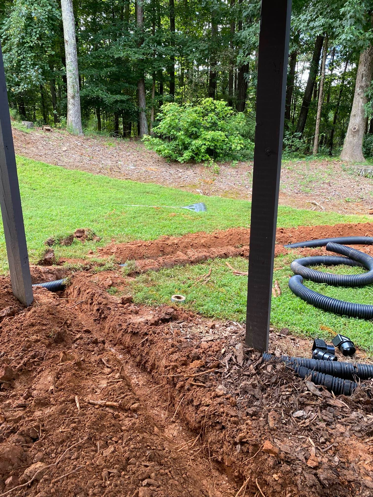
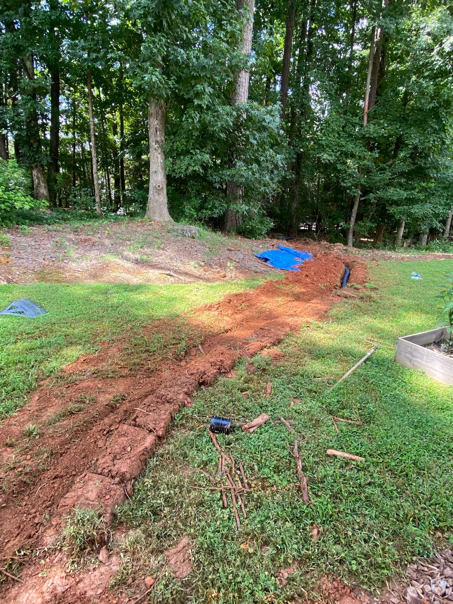

Maintenance and Troubleshooting Tips for Floor Drains
They are crucial in an intricate plumbing system, particularly in a building where flooding and water damage can be costly. At Vergel Irrigation Limited, we know the significance of maintaining proper floor drainage in commercial, industrial, and residential settings. This complete guide covers everything you need to know to properly maintain your floor drain so that it never fails when you need it.
Importance of Floor Drains
- Floor Drains
Your Safety Net for Wastewater floor Drains do their part in preventing structural damage due to standing water, the formation of mold, and its like-minded friends, ultimately contributing to the reduction of expensive repairs and the poor health of the bottom line. You can keep your area safe and hygienic by recognizing the significance of floor drains and having some maintenance and troubleshooting tips.
Maintaining Floor Drains
- Reprisal
The essence of avoiding a massive water stability act is frequent floor drain maintenance. Maintenance of Essential floor Drains.
- Keep Drains Clean
Cleaning the floor regularly with a drain cleaner can prevent grime and debris build-up from becoming a more significant problem. Clean the floor drains using hot water and mild detergent, and make sure that grit and dirt come out. Clean the General Manager: Check the pipes to the floor Drains constantly for debris- leaves, dirt, or anything else. Use a drain snake or a wire hanger to unclog floor Drains.
- Flushing Hot Water
Hot water should be flushed into the floor drains periodically, this will help dissolve oils from greases and soap residues that could become the cause of blockages. It will help keep floor drains functioning efficiently.
- Enzyme-Based Cleaners
Enzyme-based drain cleaners work for good maintenance of the floor drain. These are organic matter-eating cleaners that prevent clogs and keep floor drains open.
Preventative Maintenance:- 1.Perform routine maintenance checks on floor drains for signs of damage or wear.
- 2.Inspect floor drains for signs of damage, such as cracks, rust, or other problems that could inhibit operation.
- 3.Detect issues before they become expensive repairs.
Common Floor Drain Problems and How to Solve Them
 Floor drains can develop problems despite regular maintenance. Common Problems and Tips for floor Drains:Slow Drainage The slow drainage method will mainly be due to partial blockages in floor Drains.The most effective method of removing a toilet blockage is to use a plunger to create suction to help dislodge the blockage. For floor drains, sometimes a drain snake or a mix of baking soda followed by vinegar, then a lot of hot water will help clear them too.
- Noxious Odors
Foul smells from floor Drains may be caused by accumulated debris and dried traps. Drains in your home may be an odor issue, and pouring a combination of baking soda and vinegar with hot water can remove malodors from floor drains. Water filled the trap to avoid the buildings whose drainpipes smell.
- Water Backup
Pull the floor drain plugs; if the water backs up, there will be a blockage further down the line. Then, you can take a professional grade drain auger to clear the blockage. Sometimes, this may require calling a professional plumber if the clog is more serious.
- Floor drain leaks
Cracked drains or broken seals can lead to leaks around floor Drains. Visually inspect the area for physical damage and replace the seals if required. You may have to replace the entire floor drain if the damage is more severe.
- Bubbling Sounds
Bubbling sounds are usually the result of air pockets in the plumbing lines and are a possible sign of clogging or poor ventilation. You can dislodge minor blockages by consuming a plunger if you experience minor blockages. If the problem persists, venting issues may require a detailed inspection by a professional.
Precautions for Floor Drains
In the case of floor Drains, preventative measures will go a long way in reducing the chances of problems. Read on to discover ways to maintain the proper condition of oil-trap floor drains.
- Maintenance
Monitoring your floor drains to avoid minor problems that eventually become major. Ensuring that floor Drains are regularly checked means you can catch issues before they escalate.
- Installing Drain Covers
Use drain covers for the floor drains to prevent large debris from entering. Floor drain covers Floor drain covers protect prime drains (which send waste down sewer lines) from clogging by trapping hair, leaves, and other debris.
- Good Disposal Practices
You should never dispose of grease, fats, and other substances that may cast off or harden, blocking the drain. Teach those in the building how to dispose of it properly to keep your floor drains performing.
Some maintenance of floor drains will vary depending on the season. During fall, for instance, floor drains are more likely to clog with leaves and debris. There are simple, seasonal maintenance routines that can help ensure these problems are dealt with proactively.
- Professional inspections
Regular inspections will allow local plumbing professionals to self-monitor and rectify potential problems with your floor drains. By inspecting the parts, a professional can ensure that all the parts are working correctly, which can help you prevent having to repair or replace anything costly down the line.
Troubleshooting Expert Ways for Floor Drains
Even with these general fixes in place, floor drains still cause trouble in some cases. Next level: Advanced techniques- Here is what hydro-jetting means
Hydro jetting is a plumbing method used to clean and unclog the interior of water pipes using a powerful and energetic stream of water shot at extremely high pressure. The technique breaks through tough clogs and ensures a free floor drain.
- Video Inspection
Using video cameras to inspect the inside of drainage pipes helps understand the location of the blockage and its type. Using this simple approach, the problem can be seen at a glance, making it easy for the floor drains to be corrected.
- Pipe Relining
This is a suitable method to lessen the price of a pipe if it is damaged. This typically includes installing a new layer inside a pipeline, eliminating the necessity for costly excavations to restore floor drains and stop spillages.
- Impediments from Roots
In places where trees possess abundant roots, nature takes its course, and roots eventually find their path to enter and congest floor drains. In addition to specialized tools and techniques to extract these roots, we can usually have root treatment applied after the roots are removed to kill whatever roots are left behind, preventing damage to floor drains.
The key to proper floor drain maintenance
You must establish an exhaustive maintenance protocol to ensure your floor drains are efficient and reliable in the long term. Long-term strategies to look into- Periodic Maintenance Plans
Create and follow a periodic maintenance plan for your floor drain. Fortunately, many of those problems can be avoided with regular maintenance to keep floor drains running smoothly for years.
- Improve Your Drains
Consider replacing the floor drain system with more up-to-date, energy-effective layouts for older properties. Better floor Drains for newer models.
- Instruction of Building Occupants
Instruct all building occupants on the necessity for appropriate care and upkeep of the flooring waste. Consistent maintenance measures, such as ensuring that unsuitable materials are not disposed of help preserve the floor drain's health. Schedules Professional Services: schedule expert plumbing services regularly to check the drains of the floor thoroughly and keep up with maintenance. Professionals can diagnose potential problems that are not usually discovered during routine check-ups.
- Track Environmental Factors
Keep tabs on environmental factors that play into floor Drains, like tree roots creeping in and time of year changes. Kellems says responding to indicators before a problem is the most effective way to prevent "unforeseen consequences," such as plants shutting down unexpectedly.
Factors To Consider Floor drains are prone to environmental concerns
Compliance and environmental impact of floor drains are also maintained. Thus, some eco-friendly tips to keep the floor handy are the following- Usage of eco-friendly Cleaning Products
Go for eco-friendly cleaning products. You can go for eco-friendly cleaning products to keep your floor drains clean. These chemicals have a lesser environmental impact and a lesser tendency for environmental pollution.
- Water conservation
Use water effectively in the maintenance of floor drains. Efficient use of water saves resources and reduces the load on drainage systems.
- Waste In the Trash
Ensure you are dumping all waste materials you remove from your floor drains properly. Do not put toxic chemicals or materials down the drain and comply with local ordinances regarding waste disposal.
- Sustainability
Integrate sustainable practices into the broader maintenance of floor drains. They included materials that are sustainable to use in repairs and replacements and the implications on the nature of demonstrating for repairs.
- Green Certifications
Where available, you should pursue green certifications for your building's plumbing systems, including floor drains. Emerald guidelines usually encompass sustainability in drainage.
Conclusion
Floor Drains are an essential feature of every structure that can make or break the plumbing system of any structure. Floor Drains are a free-draining area where the collected water will go. To maintain the picture of the permanent flooring and for security, floor drains must be kept in reasonable condition - Maintenance, fast troubleshooting, and preventive methods are essential. You can keep your drainage systems working efficiently and effectively by abiding by the detailed floor drain maintenance and troubleshooting tips in this article.You do not want to wait for a floor drain to get plugged up before you take care of it. Keeping up with the maintenance of your floor drains will save you from having to spend money on repairs and extend the life of your plumbing infrastructure. For all home, facility, or business owners, prevention is always better than cure, and proactive maintenance and troubleshooting of your floor drains will save you time, money, and hassle.Floor drains are the backbone of your building. These systems are essential for the security of your house and allowing them to work correctly is necessary for your properties as. Following these maintenance and repair tips for your floor drains, you will be able to solve the problems that may arise and, in addition, warranty your drain systems to last much longer.
At Vergel Irrigation Limited, we conduct regular inspections and troubleshoot your floor drains to help our clients maintain functional and reliable plumbing systems. A responsible commercial property owner must perform a careful mixture of proper maintenance, preventive measures, and advanced troubleshooting to keep floor drains operational. Since floor drains are constantly present in industrial, commercial, and even residential settings, regular cleaning, debris removal, and inspection could prevent joint problems. Further, building occupants should be taught proper disposal practices and professional inspections, which could greatly help the efficiency and reliability of floor drains.Long-term maintenance strategies for the floor drain, such as regular maintenance plans and system drains, can be implemented to preserve their functionality. Responsible maintenance of floor drains also entails factors such as the environmental need to utilize green cleaning products and adopt sustainable practices.To summarize this information, floor drains are vital in dealing with wastewater and eliminating any chance of water damage in any building. After using these tips for managing and correcting the issues in your floor drains, you can maximize their lifespan. Continuous maintenance and care for the floor drains will prevent any of these issues, and a high-priced repair will ensure that the plumbing system is safe and working as correctly as possible.